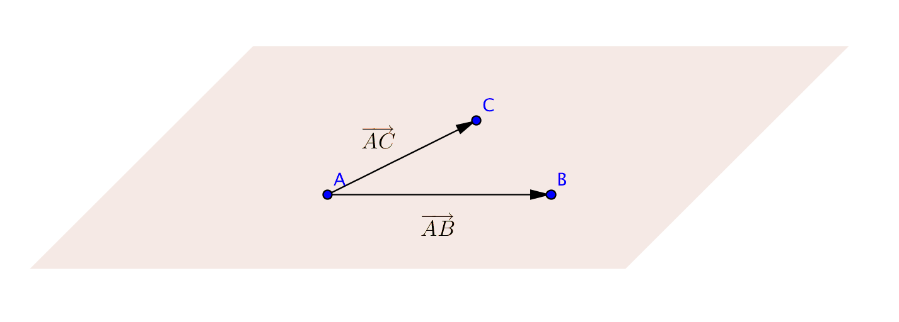

10. Geometriskt plan i rymden
Ett geometriskt plan spänns upp av tre punkter. Med dessa tre punkter kan vi bilda två basvektorer som spänner upp samma plan.

Exempel 1 Är punkten \(P=(16,1,33)\) i planet som spänns upp av punkterna \((-1,2,-3)\), \((4,-5,2)\) och \((2,-1,1)\)?
Lösning
Vi skissar upp följande bild:

Om \(P\) ligger i planet så kan vi uttrycka \(\overrightarrow{AP}\) som komponenter av \(\overrightarrow{AB}\) och \(\overrightarrow{AC}\), alltså \(\overrightarrow{AP}=r\overrightarrow{AB}+s\overrightarrow{AC}\).
Vi bildar vektorerna,
\(\begin{array}{l} \overrightarrow{AP} = (16-(-1)\overline{i}+(1-2)\overline{j}+(33-(-3))\overline{k} = 17\overline{i}-\overline{j}+36\overline{k} \\ \overrightarrow{AB} = (4-(-1)\overline{i}+(-5-2)\overline{j}+(2-(-3))\overline{k} = 5\overline{i}-7\overline{j}+5\overline{k} \\ \overrightarrow{AC} = (2-(-1)\overline{i}+(-1-2)\overline{j}+(1-(-3))\overline{k} = 3\overline{i}-3\overline{j}+4\overline{k} \\ \end{array}\)
Vi får att:
\(\begin{array}{rcl} \overrightarrow{AP} &=& r\overrightarrow{AB}+s\overrightarrow{AC} \\ 17\overline{i}-\overline{j}+36\overline{k} &=& r[5\overline{i}-7\overline{j}+5\overline{k}]+s[3\overline{i}-3\overline{j}+4\overline{k}] \\ 17\overline{i}-\overline{j}+36\overline{k} &=& (5r+3s)\overline{i}+(-7r-3s)\overline{j}+(5r+4s)\overline{k} \\ \end{array}\)
Uppdelning i bas är entydig och vi får
\(\left\{ \begin{array}{rcl} 17 &=& 5r+3s \\ -1 &=&-7r-3s \\ 36&=& 5r+4s \\ \end{array} \right.\)
Den första och tredje ekvationen ger oss
\(\left\{ \begin{array}{rcl} 17 &=& 5r+3s \\ 36&=& 5r+4s \\ \end{array} \right.\)
som har lösningarna \(r=-8\) och \(s=19\). Då vi sätter in värdena i den andra ekvationen, \(-1 =-7r-3s = -7(-8)-3\cdot 19 = 56-57\) som stämmer. (Vi kan lösa hela ekvationssystemet med räknare och konstatera att ekvationerna satisfierar varandra.)
Vi kan alltså skriva \(\overrightarrow{AP}\) som komponenter av \(\overrightarrow{AB}\) och \(\overrightarrow{AC}\). Punkten \(P\) ligger alltså i planet.
Ett geometriskt plan spänns upp av en punkt A och basvektorerna \(\overline{u}\) och \(\overline{v}\). Om punkten P finns i planet kan vi uttrycka \(\overrightarrow{AP}\) som komponenter av \(\overline{u}\) och \(\overline{v}\), dvs \(\overrightarrow{AP}=r\overline{u}+s\overline{v}\) där \(r\) och \(s\) är reella tal.

Utnyttjar vi ortsvektorerna \(\overrightarrow{OA}\) och \(\overrightarrow{OP}\) blir villkoret att \(\overrightarrow{OP}= \overrightarrow{OA} + r\overline{u}+s\overline{v}\) där \(r\) och \(s\) är reella tal.

Vi kallar detta för planets ekvation i parameterform.
Exempel 2 Ett plan går igenom punkten \((-1,2,1)\) och spänns upp av vektorerna \(\overline{u}= 5\overline{i}+\overline{j}+\overline{k}\) och \(\overline{v} = -\overline{i}-\overline{j}-2\overline{k}\). För vilka villkor gäller att punkten \(P=(x,y,z)\) är i planet? I vilken punkt skär planet x-axeln?
Lösning
Vi skissar upp följande bild:

Punkten \(P\) är i planet om villkoret \(\overrightarrow{OP}=\overrightarrow{OA}+r\overline{u}+s\overline{v}\) gäller.
\(\begin{array}{rcl} \overrightarrow{OP} &=& \overrightarrow{OA}+r\overline{u}+s\overline{v} \\ x \overline{i} + y \overline{j} + z \overline{k} &=& -\overline{i}+2\overline{j}+\overline{k}+r[5\overline{i}+\overline{j}+\overline{k}]+s[-\overline{i}-\overline{j}-2\overline{k}] \\ x\overline{i}+y\overline{j}+z\overline{k} &=& (-1+5r-s)\overline{i}+(2+r-s)\overline{j}+(1+r-2s)\overline{k} \\ \end{array}\)
För att \(x\), \(y\) och \(z\) skall vara i planet gäller att
\(\left\{ \begin{array}{rcl} x &=& -1+5r-s \\ y &=& 2+r-s \\ z &=& 1+r-2s \\ \end{array} \right.\)
för reella värden på \(r\) och \(s\).
Planet skär \(x\)-axeln då \(y=0\) och \(z=0\). Vi får att
\(\left\{ \begin{array}{rcl} 0 &=& 2+r-s \\ 0 &=& 1+r-2s \\ \end{array} \right.\)
som har lösningarna \(r=-3\) och \(s=-1\). De ger att \(x=-1+5(-3)-(-1)=-15\). Skärningspunkten är \((-15,0,0)\).
Uppgifter
- Ett plan spänns upp av punkterna \((1,0,1)\), \((0,1,-1)\) och \((-1,-1,0)\). Är följande punkter i planet?
Bilda en ekvation för planet och testa om punkterna satisfierar ekvationen. Se vid behov exempel 1.
- \((3,2,1)\) .
Om punkten \( P=(3,2,1) \) är i planet som spänns upp av punkterna \( A=(1,0,1) , B=(0,1,-1) \) och \( C=(-1,-1,0) \) gäller ekvationen \( \overrightarrow{AP} = r\overrightarrow{AB} + s\overrightarrow{AC} \).
Vi bildar vekrorerna. Beroende på vilka punkter som vi väljer får vi lite olika basvektorer.
\( \overrightarrow{AB} = (0-1)\overline{i} + (1-0)\overline{j} + (-1-1)\overline{k} = -\overline{i}+\overline{j} -2\overline{k} \).
\( \overrightarrow{AC} = (-1-1)\overline{i} + (-1-0)\overline{j} + (0-1)\overline{k} = -2\overline{i}-\overline{j} -\overline{k}\).
\( \overrightarrow{AP} = (3-1)\overline{i} + (2-0)\overline{j} + (1-1)\overline{k} = 2\overline{i} +2\overline{j} \).
Vi får \( \overrightarrow{AP} = r\overrightarrow{AB} + s\overrightarrow{AC} \)
Då vi löser på kommer vi fram till ekvationssystemet
\( \left\{ \begin{array}{rcl} 2 & = & -r-2s \\ 2 & = & r - s \\ 0 & = & -2r -s \\ \end{array} \right. \)
Eftersom \( r = \dfrac{2}{3} \) och \( s = -\dfrac{4}{3} \) satisfierar alla tre ekvationer ligger punkten i planet.
- \((5,2,2)\)
Om punkten \( P = (5,2,2) \) är i planet som spänns upp av punkterna \( A=(1,0,1) , B=(0,1,-1) \) och \( C=(-1,-1,0) \) gäller ekvationen \( \overrightarrow{AP} = r\overrightarrow{AB} + s\overrightarrow{AC} \).
Vi bildar vekrorerna. Beroende på vilka punkter som vi väljer får vi lite olika basvektorer.
\( \overrightarrow{AB} = (0-1)\overline{i} + (1-0)\overline{j} + (-1-1)\overline{k} = -\overline{i}+\overline{j} -2\overline{k} \).
\( \overrightarrow{AC} = (-1-1)\overline{i} + (-1-0)\overline{j} + (0-1)\overline{k} = -2\overline{i}-\overline{j} -\overline{k}\).
\( \overrightarrow{AP} = (5-1)\overline{i} + (2-0)\overline{j} + (2-1)\overline{k} = 4\overline{i} +2\overline{j} +\overline{k} \).
Vi får \( \overrightarrow{AP} = r\overrightarrow{AB} + s\overrightarrow{AC} \)
Då vi löser på kommer vi fram till ekvationssystemet
\( \left\{ \begin{array}{rcl} 4 & = & -r-2s \\ 2 & = & r - s \\ 1 & = & -2r -s \\ \end{array} \right. \)
Eftersom ekvationssystemet saknar lösningar ligger punkten inte i planet.
- \((3,2,1)\) .
- I vilken punkt skär linjen som går genom origo och \((1,1,4)\) planet som spänns upp av \((1,3,-1)\), \((2,4,0)\) och \((1,5,3)\).
Vi börjar med att bilda planets ekvation.
\( A=(1,3,-1)\), \( B=(2,4,0)\) och \( C=(1,5,3)\).
\( \overrightarrow{AB} = (2-1)\overline{i} + (4-3)\overline{j} + (0-(-1))\overline{k} = \overline{i} + \overline{j} + \overline{k} \).
\( \overrightarrow{AC} = (1-1)\overline{i} + (5-3)\overline{j} + (3-(-1))\overline{k} = 2\overline{j} + 4\overline{k} \).
\( \overrightarrow{OA} = \overline{i} + 3\overline{j} - \overline{k} \).
Punkten \( P \) har koordinaterna P \( (x,y,z) \).
Vi bildar \( \overrightarrow{OP} = \overrightarrow{OA} + r\overrightarrow{AB} + s\overrightarrow{AC} \).
Vi kommer fram till planets ekvation
\( \left\{ \begin{array}{rcl} x & = & 1 + r \\ y & = & 3 + r +2s \\ z & = & -1 +r +4s \\ \end{array} \right. \)
Eftersom linjen går genom origo och genom punkten är dess riktningsvektor \( s = \overline{i} + \overline{j} + 4\overline{k} \).
Linjens ekvation är
\( \left\{ \begin{array}{rcl} x & = & t \\ y & = & t \\ z & = & 4t \\ \end{array} \right. \)
Vi söker den gemensamma punkten för planet och linjen.
\( \left\{ \begin{array}{rcl} t & = & 1 + r \\ t & = & 3 + r +2s \\ 4t & = & -1 +r +4s \\ \end{array} \right. \)
Vi får \( r = -3 \), \( s = -1 \) och \( t = -2 \).
Vi sätter in \( t = -2 \) i linjens ekvation. Vi får skärningspunkten \((-2,-2,-8)\).
- I vilken punkt skär planet som spänns upp av punkterna \((-2,1,-1)\), \((1,2,-2)\) och \((1,-2,1)\) \(x\)-axeln?
Vi börjar med att bilda planets ekvation.
\( A=(-2,1,-1)\), \( B=(1,2,-2)\) och \( C=(1,-2,1)\).
\( \overrightarrow{AB} = (1-(-2))\overline{i} + (2-1)\overline{j} + (-2-(-1))\overline{k} = 3\overline{i} + \overline{j} - \overline{k} \).
\( \overrightarrow{AC} = (1-(-2))\overline{i} + (-2-1)\overline{j} + (1-(-1))\overline{k} = 3\overline{i} -3\overline{j} + 2\overline{k} \).
\( \overrightarrow{OA} = -2\overline{i} + \overline{j} - \overline{k} \).
Punkten \( P \) har koordinaterna P \( (x,y,z) \).
Vi bildar \( \overrightarrow{OP} = \overrightarrow{OA} + r\overrightarrow{AB} + s\overrightarrow{AC} \).
Vi kommer fram till planets ekvation
\( \left\{ \begin{array}{rcl} x & = & -2 + 3r +3s \\ y & = & 1 + r -3s \\ z & = & -1 -r +2s \\ \end{array} \right. \)
Punkten på \( x \)-axeln är av typ \( (x,0,0) \).
Vi får ekvationssystemet
\( \left\{ \begin{array}{rcl} x & = & -2 + 3r +3s \\ 0 & = & 1 + r -3s \\ 0 & = & -1 -r +2s \\ \end{array} \right. \)
och får att \( r = -1\), \( s = 0\) och \( x = -5 \).
Punkten är \((-5,0,0)\).
- Punkterna \((-1,3,1)\), \((2,-2,1)\) och \((-1,-2,-1)\) spänner upp ett plan. Planet skär \(xy\)-planet i form av en linje. Bestäm linjens ekvation som formen \(Ax+By+C=0\).
Vi börjar med att bilda planets ekvation.
\( A=(-1,3,1)\), \( B=(2,-2,1)\) och \( C=(-1,-2,-1)\).
\( \overrightarrow{AB} = (2-(-1))\overline{i} + (-2-3)\overline{j} + (1-1)\overline{k} = 3\overline{i} -5 \overline{j} \).
\( \overrightarrow{AC} = (-1-(-1))\overline{i} + (-2-3)\overline{j} + (-1-1)\overline{k} = -5\overline{j} - 2\overline{k} \).
\( \overrightarrow{OA} = -\overline{i} + 3\overline{j} + \overline{k} \).
Punkten \( P \) har koordinaterna P \( (x,y,z) \).
Vi bildar \( \overrightarrow{OP} = \overrightarrow{OA} + r\overrightarrow{AB} + s\overrightarrow{AC} \).
Vi kommer fram till planets ekvation
\( \left\{ \begin{array}{rcl} x & = & -1 + 3r \\ y & = & 3 -5r-5s \\ z & = & 1 -2s \\ \end{array} \right. \)
De punkter som är i \( xy \)-planet är av typ \( (x,y,0) \).
Vi får ekvationssystemet
\( \left\{ \begin{array}{rcll} x & = & -1 + 3r & \Leftrightarrow r = \dfrac{x+1}{3} \\ y & = & 3 -5r-5s \\ 0 & = & 1 -2s & \Leftrightarrow s = \dfrac{1}{2}\\ \end{array} \right. \)
När vi sätter in värdena för \( r \) och \( s \) i den mittersta ekvationen får vi planets ekvation. Vi får \(10x+6y+7=0\).
Varje ekvation av formen \(Ax+By+Cz+D=0\) där \(A\), \(B\) eller \(C\) inte har värdet noll representerar ett plan. Detta kallas för planet ekvation i normalform. Ett sätt att skapa denna ekvation är att först skapa planets ekvation i parameterform och sedan eliminera \(r\) och \(s\).
Bestäm planets ekvation i normalform för det plan som spänns upp av
Bilda ett ekvationssystem där du har
\(\left\{\begin{array}{rcl} x & = & \ldots \\ y & = & \ldots \\ z & = & \ldots \\ \end{array}\right.\)
tag sedan och eliminera \(r\) och \(s\).
- \((0,0,0)\), \((1,0,3)\) och \((1,1,5)\).
Vi börjar med att bilda planets ekvation.
\( A=(0,0,0)\), \( B=(1,0,3)\) och \( C=(1,1,5)\).
\( \overrightarrow{AB} = (1-0)\overline{i} + (0-0)\overline{j} + (3-0)\overline{k} = \overline{i} + 3\overline{k} \).
\( \overrightarrow{AC} = (1-0)\overline{i} + (1-0)\overline{j} + (5-0)\overline{k} = \overline{i} +\overline{j} +5 \overline{k} \).
\( \overrightarrow{OA} = 0\overline{i} +0\overline{j} + 0\overline{k} \).
Punkten \( P \) har koordinaterna P \( (x,y,z) \).
Vi bildar \( \overrightarrow{OP} = \overrightarrow{OA} + r\overrightarrow{AB} + s\overrightarrow{AC} \).
Vi kommer fram till planets ekvation
\( \left\{ \begin{array}{rcll} x & = & r +s & \Leftrightarrow r = x-s\\ y & = & s \\ z & = & 3r +5s \\ \end{array} \right. \)
Vi kombinerar ekvationerna till en ekvation. Vi får planets ekvation \(3x+2y-z=0\).
- \((1,3,-1)\), \((2,4,1)\) och \((3,3,-2)\).
Vi börjar med att bilda planets ekvation.
\( A=(1,3,-1)\), \( B=(2,4,1)\) och \( C=(3,3,-2)\).
\( \overrightarrow{AB} = (2-1)\overline{i} + (4-3)\overline{j} + (1-(-1))\overline{k} = \overline{i} +\overline{j} + 2\overline{k} \).
\( \overrightarrow{AC} = (3-1)\overline{i} + (3-3)\overline{j} + (-2-(-1))\overline{k} = 2\overline{i} - \overline{k} \).
\( \overrightarrow{OA} = \overline{i} +3\overline{j} -\overline{k} \).
Punkten \( P \) har koordinaterna P \( (x,y,z) \).
Vi bildar \( \overrightarrow{OP} = \overrightarrow{OA} + r\overrightarrow{AB} + s\overrightarrow{AC} \).
Vi kommer fram till planets ekvation
\( \left\{ \begin{array}{rcll} x & = & 1+ r +2s \\ y & = & 3+r & \Leftrightarrow r = y-3\\ z & = & -1 +2r -s & \Leftrightarrow s = -1+2r-z \\ \end{array} \right. \)
Vi kombinerar ekvationerna till en ekvation. Vi får planets ekvation \( x-5y+2z+16=0\).
- \((-2,0,1)\), \((-1,2,-1)\) och \((1,1,-4)\).
Vi börjar med att bilda planets ekvation.
\( A=(-2,0,1)\), \( B=(-1,2,-1)\) och \( C=(1,1,-4)\).
\( \overrightarrow{AB} = (-1-(-2))\overline{i} + (2-0)\overline{j} + (-1-1)\overline{k} = \overline{i} + 2\overline{j} - 2\overline{k} \).
\( \overrightarrow{AC} = (1-(-2))\overline{i} + (1-0)\overline{j} + (-4-1)\overline{k} = 3\overline{i} +\overline{j} -5 \overline{k} \).
\( \overrightarrow{OA} = -2\overline{i} + \overline{k} \).
Punkten \( P \) har koordinaterna P \( (x,y,z) \).
Vi bildar \( \overrightarrow{OP} = \overrightarrow{OA} + r\overrightarrow{AB} + s\overrightarrow{AC} \).
Vi kommer fram till planets ekvation
\( \left\{ \begin{array}{rcll} x & = & -2 + r +3s & \Leftrightarrow r = x+2-3s\\ y & = & 2r +s & \Leftrightarrow s = y-2r \\ z & = & 1 -2r -5s \\ \end{array} \right. \)
Vi får planets ekvation \(8x-y-5z-11=0\).
- \((1,-1,-2)\), \((0,3,1)\) och \((3,-2,-1)\)
Vi börjar med att bilda planets ekvation.
\( A=(1,-1,-2)\), \( B=(0,3,1)\) och \( C=(3,-2,-1)\).
\( \overrightarrow{AB} = (0-1)\overline{i} + (3-(-1))\overline{j} + (1-(-2))\overline{k} = -\overline{i} + 4\overline{j} + 3\overline{k} \).
\( \overrightarrow{AC} = (3-1)\overline{i} + (-2-(-1))\overline{j} + (-1-(-2))\overline{k} = 2\overline{i} -\overline{j} + \overline{k} \).
\( \overrightarrow{OA} = \overline{i} - \overline{j} -2\overline{k} \).
Punkten \( P \) har koordinaterna P \( (x,y,z) \).
Vi bildar \( \overrightarrow{OP} = \overrightarrow{OA} + r\overrightarrow{AB} + s\overrightarrow{AC} \).
Vi kommer fram till planets ekvation
\( \left\{ \begin{array}{rcll} x & = & 1 - r +2s & (1.)\\ y & = & -1 +4r -s & (2.) \\ z & = & -2 +3r +s & (3.) \\ \end{array} \right. \)
Då vi kombinerar ekvationerna får vi planets ekvation, \(x+y-z-2=0\)
- \((0,0,0)\), \((1,0,3)\) och \((1,1,5)\).